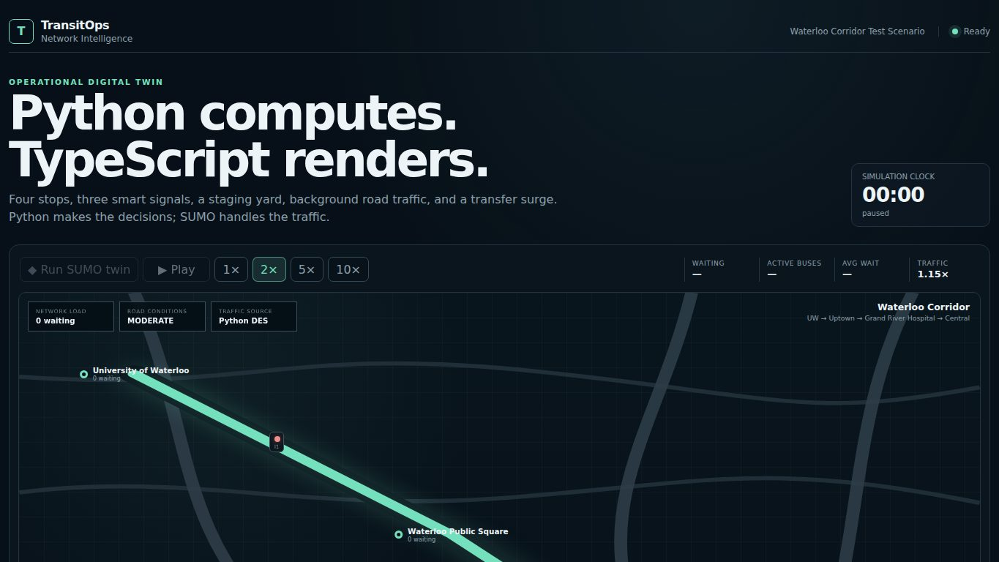

RECORDED PUBLIC INTERFACE / 202601 / TRANSIT SIMULATIONLIVE WEB APP
TransitOps
Run a Waterloo-inspired control simulation. Test demand surges, disruptions and adaptive dispatch; compare modeled waiting times and completed journeys.
Simulated corridor, not live GRT data. SUMO requires its separately hosted service.